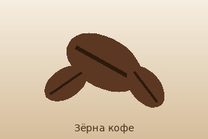
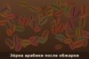

История кофе
По легенде, кофе открыл эфиопский пастух Калди, заметивший, как бодрят коз ягоды кофейного дерева.
Раздел 1. Откуда пришёл кофе
Родина кофе и таймлайн
- Эфиопия — родина кофейного дерева.
- XV век — кофе распространяется в Йемене.
- XVII век — кофе попадает в Европу.
- XVIII век — плантации в Новом Свете.
Регионы выращивания и виды зёрен
- Основные регионы выращивания
- Латинская Америка (Бразилия, Колумбия)
- Африка (Эфиопия, Кения)
- Азия (Вьетнам, Индонезия)
- Основные виды
- Арабика — мягкий вкус
- Робуста — крепкая, горьковатая

Обжаренные зёрна арабики. Степень обжарки определяет вкус и аромат.
Миниатюра (щёлкните, чтобы открыть изображение 600×400 в новой вкладке): 
Раздел 2. Хронология
| Что | Подробности | Ссылка / изображение |
|---|---|---|
| IX век | Легенда о Калди | Википедия ↗ |
| XV век | Йемен — первые кофейни | Суфийские обители |
| XVII век | Европа | как заваривали |
| Изображение внутри ячейки таблицы: | ||